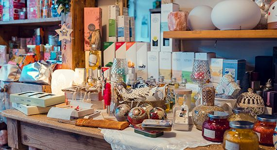
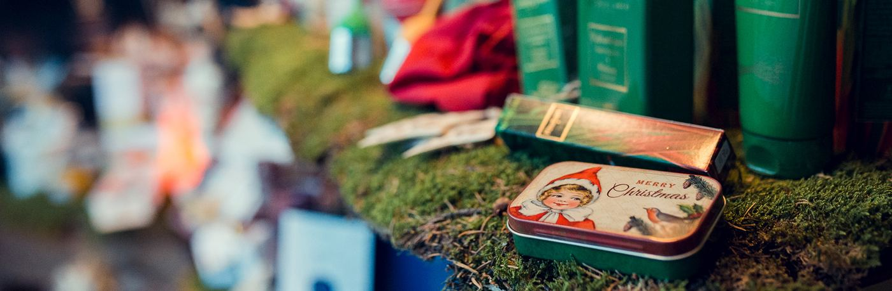

L'erboristeria di Tione, da più di 30 anni.
Erboristeria, naturopatia e iridologia in via Pinzolo 25/A. Aprite un cassetto: dentro c'è quello che trovate in negozio.

Toccate un cassetto per aprirlo.

«La natura non fa nulla di inutile.»Aristotele
Orario del negozio
| Lunedì | 9.00-12.00 |
| Martedì | 9.00-12.00 · 15.00-19.00 |
| Mercoledì | 9.00-12.00 · 15.00-19.00 |
| Giovedì | 9.00-12.00 · 15.00-19.00 |
| Venerdì | 9.00-12.00 · 15.00-19.00 |
| Sabato | 9.00-12.00 · 15.00-19.00 |
Venite a trovarci
Via Pinzolo 25/A, 38079 Tione di Trento (TN).
Apri la mappa →
Telefono: 0465 326268
Email: michelevigilio@alice.it
La pagina Facebook